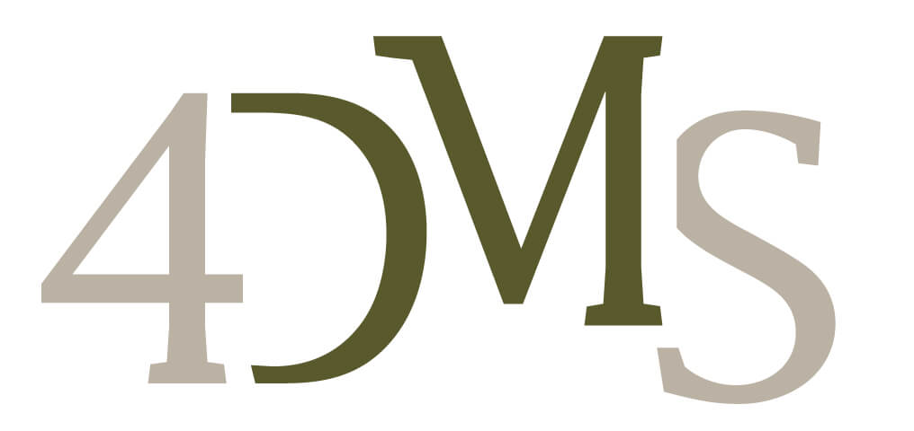
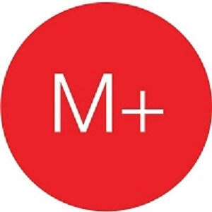
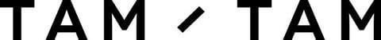
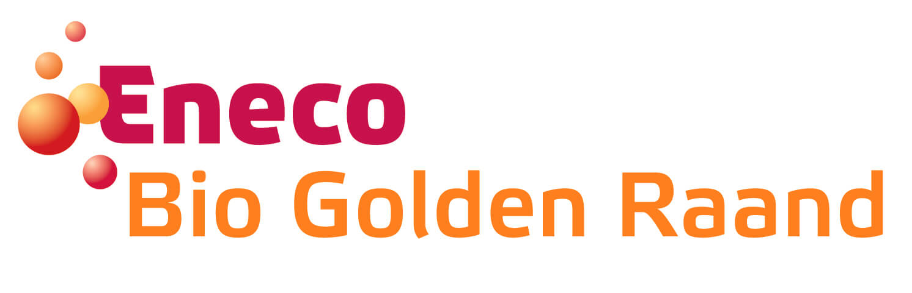

TMNS is hoofdsponsor geworden van Eneco Runners RoPaRun team!
TMNS is Europa’s meest toonaangevende, onafhankelijke IT-integratie provider. Ze bedienen inspirerende klanten in uiteenlopende branches en gebruiken daarbij de nieuwste, innovatieve technologieën. Ze helpen hun klanten om slim, responsive en flexibel te werken. Ze helpen ons team van parijs naar rotterdam. Hoe mooi! Medewerkers hebben een bedrag opgehaald en directie heeft dit verdriedubbeld. Met als resultaat een geschonken bedrag van maar liefst €2730, wat TMNS direct tot hoofdsponsor maakt van tean EnecoRunners.Ymor is dé onafhankelijke specialist op het gebied van IT Operations Analytics (ITOA). Door het samenbrengen van verschillende data wordt diepgaand inzicht gecreëerd in uw IT-omgeving waarmee uw IT voorspelbaar wordt. U voert proactief regie over uw IT met als resultaat maximale prestaties, beschikbaarheid, veiligheid en wendbaarheid. Trots om te vermelden dat Ymor sponsor is geworden van ons Eneco Runners RoPaRun team.
 Is het geen mooie gedachte als wij allemaal duurzame
energie zelf in de hand hebben? Dat is geen toekomst meer. We zitten er middenin en steeds meer mensen doen mee. Ze
kiezen zelf hoe ze energie opwekken, gebruiken, verkopen en delen met anderen. We hebben maar één aarde en die mogen
we niet zwaarder belasten dan strikt noodzakelijk.
Is het geen mooie gedachte als wij allemaal duurzame
energie zelf in de hand hebben? Dat is geen toekomst meer. We zitten er middenin en steeds meer mensen doen mee. Ze
kiezen zelf hoe ze energie opwekken, gebruiken, verkopen en delen met anderen. We hebben maar één aarde en die mogen
we niet zwaarder belasten dan strikt noodzakelijk.
Eneco Groep zoekt samen met klanten en partners naar energieoplossingen die slimmer wonen, werken en leven mogelijk maken en is natuurlijk wederom sponsor geworden van het Eneco Runners RoPaRun team.
De Wet Onafhankelijk Netbeheer (WON), in de volksmond de 'Splitsingswet' genoemd, is een Nederlandse wet die in aanvulling op de Elektriciteitswet 1998 en de Gaswet nadere regels geeft omtrent onafhankelijk netbeheer. Dit heeft ertoe geleid dat Eneco en Stedin, dankzij de overheid, dit jaar 'gesplitst' zijn.
Team EnecoRunners laat zich echter niet splitsen. Ook dit jaar is ons team weer samengesteld uit Stedin en Eneco medewerkers. Want,..“Leven toevoegen aan de dagen, waar vaak geen dagen meer kunnen worden toegevoegd aan het leven”...is het motto van ons allen.
Naast Eneco is ook Stedin sponsor geworden van het team. Thanks Stedin!
 Ieder contactmoment telt. Of dit nu gaat via e-mail, web, mobile, social media, call of direct mail: 1-op-1 klantinteractie staat u te wachten. 4DMS zet voor u de unieke kracht van de verschillende kanalen in. Individueel of gecombineerd en waar mogelijk geautomatiseerd.
@4DMSbv als trouwe sponsor die alweer voor het 4de jaar 'mee doet' Geweldig!
E-mergo levert Qlik software, consultancy, beheer en workshops. Met Qlik kunnen zeer interactieve en gebruiksvriendelijke dashboards ontwikkeld worden voor het maken van belangrijke beslissingen. E-mergo is sponsor geworden van Team Eneco RoPaRunners. https://www.facebook.com/E-mergo-127366860785091/
 Veel organisaties bevinden zich in een tijdperk waarin de ontwikkelingen op het gebied van informatie- en communicatietechnologie sneller gaan dan bijgehouden kan worden. Consumenten willen in toenemende mate 24/7 en via allerlei communicatiekanalen contact onderhouden met elkaar en eisen dit ook steeds meer van organisaties. Marketing, verkoop en communicare uitdagingen worden hierdoor steeds complexer. M+ ontwikkelt continu een duidelijke en toekomstgerichte klantcommunicatie visie en – strategie. Hiermee ondersteunt M+ organisaties om beter in te spelen op de veranderingen binnen de wereld van Digital en Communicare.M+ ondersteunt het team van EnecoRunners met een geweldige bijdrage in hun journey van Parijs naar Rotterdam. Bekijk ook de M+ site.
FlowFabric helpt organisaties veranderen. Deze experts in applicatieontwikkeling gaan geen enkele business uitdaging uit de weg. Met domeinkennis in retail & wholesale en bouw & installatie zijn zij in staat om complexe processen in no-time te doorgronden. FlowFabric is sponsor geworden van team EnecoRunners.
Wilt u als A-merk, uw klanten of prospects op een persoonlijke manier bereiken en het maximale rendement behalen uit ieder contact, dan kan Uitblinqers dit voor u bereiken op een manier waarop u dit zelf graag had gekund. Met onze jarenlange ervaring in klant contact en sales onderscheiden wij ons door oprechte en concrete gespreksvoering voor onze klanten. Hierbij tonen wij ons een waardevolle gesprekspartner op alle niveaus. Uitblinqers brengt deze communicatie graag voor u tot stand door oplossingen te bieden op het gebied van Direct Sales, Social Media en in-en Outbound klantcontact. Hierin gaan wij ver! 110% is voor ons de norm en hierop is tevens onze academy gebaseerd, de 110Academy Uitblinqers is sponsor geworden van het Eneco RoPaRunners team.
Tam / Tam streeft een perfecte combinatie na van creativiteit, data en code. Dát is het geheim. Tam / Tam is een full service digital agency. Tam / Tam combineert de kennis van de markt met hun kennis van online. Het resultaat: Digitale ervaringen die een glimlach op je gezicht toveren. Waar gebruikers écht gelukkig van worden.
 Eneco Bio Golden Raand is de meest efficiënte bio-energiecentrale in de Benelux. In het Delfzijlse havengebied heeft Eneco een bio-energiecentrale van 49,9 MegaWatt gebouwd. In Eneco Bio Golden Raand worden houtsnippers van gerecycled afvalhout omgezet in groene stroom voor zo’n 120.000 huishoudens. Jaarlijks komt er circa 300.000 ton gerecyled afvalhout per schip, trein en vrachtwagen aan in Delfzijl uit Nederland en omliggende landen. Ten opzichte van de elektriciteitsproductie van een gemiddelde centrale levert deze houtcentrale een besparing op CO2-uitstoot van 250.000 ton per jaar. De aankomende tijd wordt de bio-energiecentrale geschikt gemaakt voor stoomlevering aan AkzoNobel. Met dezelfde hoeveelheid biomassa, wordt vanaf december 2016 een dubbele hoeveelheid duurzame energie gemaakt. Eneco Bio Golden Raand is sponsor geworden van onze hardloop shirts.
Energyprofs is meer dan alleen een adviesbureau met een unieke focus op de energiebranche. Vanuit een diepgaande marktkennis helpen wij onze klanten bij het verbeteren van hun operationele performance. Wij analyseren, ontwerpen en implementeren verbeteringen in de bedrijfsvoering. Wij realiseren projecten op onder andere de volgende gebieden: Assetmanagement, Klantprocessen, Intelligente netten, Marktprocessen, Wet- en Regelgeving, Netmanagement, Uitvoering, Aanleg, Beheer, Energy Trade & Riskmanagement en Smart Metering, zowel voor Elektriciteit als Gas. Kenmerkend voor Energyprofs is de optimale samenwerking met onze klanten, onze pragmatische aanpak en resultaatgerichtheid. We zeggen wat we doen en doen wat we zeggen. It's all about people, dus is Energyprofs sponsor geworden van ons team tijdens de RoPaRun 2017. Great to have them on board.
Cendris Customer Contact en #Coloursinternet inmiddels trouwe sponsors van RoPaRun team EnecoRunners. Ook weer in 2017!
Uw klant dichterbij voor meer resultaat Als experts van Cendris werken wij vanuit één passie: communiceren op een manier die leidt tot meer resultaat. Dat doen we door u in staat te stellen uw klanten en prospects beter te leren kennen. Door ze actiever te betrekken bij uw product, dienst, merk of organisatie. Met als doel u dichter bij uw klant te brengen. En uw klant dichter bij u.
Digital technology is dé katalysator in het veranderen van bestaande en het ontstaan van nieuwe business modellen. Bij Colours begrijpen we dat als geen ander. Al sinds 1997 helpen wij als full service digital agency klanten bij het concretiseren en realiseren van hun digitale ambities.
Het kan koud zijn in de nachtetappes tijdens de #RoPaRun We worden warm gehouden door BusinessFashion die het team fleecejacks heeft gesponsord.
En als sponsor toegevoegd #credittools. We krijgen van hen de credits
Dimensys is sponsor geworden van team Eneco Runners. Dimensys is een IT & Business consulting bedrijf. Zij assisteert proces- en projectmatig werkende organisaties in Noordwest Europa bij de optimalisatie van haar bedrijfsprocessen en implementatie van IT oplossingen. Ter ondersteuning van haar dienstverlening beschikt zijn over een aantal branche-specifieke softwarecomponenten (Prefab-SAP) aangevuld met standaard IT oplossingen op basis van o.a. SAP, Primavera, Microsoft en GE software. Brede expertise en ervaring van o.a. de engineering & construction, industry, infra en manufacturing branche, vormen de basis van ieder advies. Alle consultants zijn gekwalificeerde, ervaren, gedreven en enthousiaste professionals met jarenlange hands-on ervaring binnen een service en/of project georiënteerde organisatie.
Team Eneco Runners vertrekken vrijdag 2 juni naar Parijs. Dit doen we niet met een lege maag en gaan dus alvast koolhydraten 'stapelen' door vrijdag voor vertrek met het team pasta te gaan eten. Deze pasta 'party' wordt ons aangeboden door receptel hospitality. Door receptel hospitality worden we iedere dag warm ontvangen wanneer we dagelijks aan het werk gaan. Receptel medewerkers zorgen nu voor een warme hap op weg naar Parijs. Hoe 'warm' is dat...
Tijdens de Roparun hebben onze Eneco Runners behoefte aan van alles, uiteraard is drinken hier een onmisbaar element van. Daarom zijn wij ook heel erg blij dat met onze sponsor van de bidons waar de lopers uit kunnen drinken. Deze bidons zijn beschikbaar gesteld door Sportshop Dugout uit Lekkerkerk. Het bedrijf in de Krimpenerwaard waar iedere sportploeg terecht kan voor de sportkleding, schoenen accessoires en ga zo maar door. Sportshop Dugout heeft een jarenlange ervaring in de sportwereld en menig team in de Krimpenerwaard heeft inmiddels kennis gemaakt met de flexibiliteit, passie en inzet waarmee Sportshop Dugout hen mee heeft aangekleed en voorzien van alle benodigdheden. Zoekt jouw sportteam, sportkleding, accessoires of andere benodigdheden neem dan zeker contact op met de Sportshop Dugout. Kijk hiervoor op sportshopdugout.nl of op facebook
Als sponsor van de onmisbare materialen om de spieren van onze lopers soepel en actief te houden levert Jordens Fysio Medisch Centrum een bijdrage aan wat wij als Eneco Runners graag willen: In een goede gezondheid ons doel bereiken om van Parijs naar Rotterdam te gaan lopen.
Jordens Fysio Medisch Centrum, gevestigd in Krimpen aan de Lek trekt vanuit een wijde omtrek mensen naar de praktijk omdat zijn bekend staan als dé praktijk waar je naar toe moet gaan om van je klachten af te komen. Behalve fysio- en manuele therapie biedt Jordens Fysio Medisch Centrum nog ruim 20 specialisaties onder één dak, kortom Jordens Fysio Medisch Centrum biedt de zorg die u zoekt! Voor meer informatie kunt u kijken op de facebook pagina en op de site.
Jumbo Zoetermeer Oosterheem zorgt voor de energizer en verzorgd de sportdrank tijdens de #RoPaRun. Bedankt!
Cool! Eneco internal audit is sponsor geworden van ons hotel in Frankrijk. We kunnen hierdoor fris en fruitig aan de start staan.